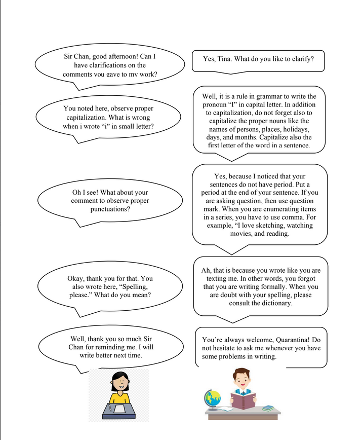

-

UNIT VI: WRITING CONVENTIONS ALONG MECHANICS
-
UNIT VI: WRITING CONVENTIONS ALONG MECHANICS
-

UNIT VI: WRITING CONVENTIONS ALONG MECHANICS
-

UNIT VI: WRITING CONVENTIONS ALONG MECHANICS

UNIT VI: WRITING CONVENTIONS ALONG MECHANICS
INTRODUCTION
Good Job! Finally, you are on the final convention in writing which is mechanics. Are you a type of person who is conscious of your spelling, punctuation marks, and capitalization? If yes, then continue developing that skill. Well if not, it is your time to be reminded and be conscious about your spelling, punctuation marks, abbreviation, indention, and capitalization.
The goal of mechanics of writing is to make the writing precise and grammatically correct. It is directed to make the writing systematic in terms of correct spelling, punctuation, italics and so on. The mechanics of writing are the rules that must be followed because if one fails to do so, or if there are no such rules of writing, then the writing would be certainly very difficult.
 LEARNING OBJECTIVES
LEARNING OBJECTIVES
At the end of the lesson, you are expected to:
- Understand the uses of puntuation marks;
- Develop mastery on the different rules in capitalization;
- Understand the importance of accurate spelling;
- Correct sentences with erroneous spelling, capitalization, and punctuation marks
- Determine the correct sentence with proper punctuation marks; and
- Discuss the importance of technical writing
ACTIVATING PRIOR KNOWLEDGE
ACTIVITY 1
Directions:Read the conversation betweenMr. Chan and his student Quarantina about writing mechanics. PRESENTATION OF CONTENT
TOPIC 1: WRITING MECHANICS DEFINED
Writing mechanics are the elements and conventions governing written language. It includes the rules and conventions in punctuation, spelling, paragraphing, capitalization, and sometimes, legible handwriting as well.
Impotance of Mechanics in Writing
These are critical factors in written language, which can either clarify the meaning or confuse the reader. Written communication must be more precise and accurate to convey the intended meaning. Hence,writing mechanics standardize how written language is presented to clarify the writer's intent and content.
Therefore, To prevent confusion, it is necessary to know and follow these conventions in writing.
TOPIC 2: PUNCTUATION
-
What is punctuation?
Punctuation is an essential element of the English language. It adds clarity, precision, and meaning to our written words.
Knowing how and when to use question marks, quotation marks, periods, commas, semicolons, parenthesis, apostrophes and exclamation points, and others ensures proper grammar usage.
Interestingly, it helps a writer to make coherent sentences and to communicate thoughts and ideas more effectively and efficiently.
-
Why Is Punctuation Important?
Punctuation is important as it replaces the emotions conveyed by facial expressions, tone of voice, and gestures. It also organizes information into discrete units that are more understandable.
-
Exclamation Marks, Question Marks, And Full Stops Meaning
Exclamation marks are one of the few tools in writing mechanics that help the writer express emotion. They are written at the termination of a sentence to express strong emotions such as surprise, anger, or excitement.
Questions are usually indicated by intonation in spoken communication. Sometimes question words such as what, who, or where are omitted, and the intonation alone shows that the speaker is asking a question.
Written language cannot show intonation, so all questions are marked with a question mark instead of a full stop.
Full stops, exclamation and question marks indicate the end of the sentence and are critical in allowing the reader to understand the text.
-
Commas Make A Difference In Meaning
Commas are critical in allowing the reader to understand the sentence correctly. Confusions easily occur when there are no commas.
“Let’s eat Jane” is a very different meaning to “Let’s eat, Jane.” The former expresses the thought of eating the person who is Jane, while the later means someone is asking or inviting Jane to eat together.
Here is another example. The road sign "Go, slow men at work" has a different meaning with "Go slow, men at work". The former informs travelers and drivers that they can continue driving regardless of speed since slow men are working. While the later is a form of a warning to drivers and travelers that they need to slow down because there are men working on the road.
Did you notice the difference in using commas in the different places in a sentence? How much more if you're going to use other punctuation marks?
This only means that all punctuation marks clarify meaning. They give more information about the words. In other words, punctuation marks directs and influences the reader's interpretation of the sentences, paragraphs, and text as a whole.
Punctuation Marks Uses 1. Commas (,) -
Use a comma to separate items in a series. If all items in the series are followed by and or or, use a comma.
Example: Squirrel, rabbit, and venison are the three kinds of meat originally in a burgoo.
-
Use a comma to separate two complete sentences joined by a conjunction (and, but, or, nor, or for, and sometimes yet and so).
Example: We ran out of gas, so I went to the nearest gas refilling station.
-
Use commas to set off dates and addresses
Examples: January 08, 2021/ Davao City, Philippines
2. Semicolons (;) -
Use a semicolon to separate two sentences when there is no coordinating conjunction such as and, but, or, nor, or for.
Example: Class was canceled today; Mr. Diaz was homesick.
-
If the two sentences are joined by a conjunctive adverb, such as however, consequently, therefore, or moreover, use a semicolon before the conjunctive adverb and a comma after it.
Example: Leaves fell from the trees in multiple colors; consequenty, we have a big job ahead for us raking them into compost piles.
-
Use a semicolon to separate two sentences joined with coordinating conjunction when commas are contained within either of the sentences.
Example: Leaves fell from the trees in red, gold, yellow, and brown; and it looked like snow with a rainbow.
-
Use a semicolon to separate items in a series if there are commas within the items.
Example: Ms. Dapar, my friend; Mr. Diaz, my neighbor; and Ms. Lastimosa, my MAPEH teacher all pledged to support the program
3. Colon (:) -
Use colon for conventional items: giving the time, separating chapter from a verse in Bible references, separating volume from a page in
bibliography references, and writing a salutation in a business letter.
Examples: 5:30 a.m./ Luke 4:17-28/ Dear Madam:
-
Use a colon to introduce a formal list. Words such as the following or as follows frequently signal a formal list.
Example: The attendant made the following checks on my car: oil level, transmission fluid level, battery, tire pressure, and windshield washer fluid.
Apostrophe (') -
An apostrophe is used as a substitute for a missing letter or letters in
a word (as in the contraction cannot = can't), to show the possessive
case (Jane's room), and in the plural of letters, some numbers and
abbreviations.
Note: groups of years no longer require an apostrophe (for example, the 1950s or the 90s).
Dash (— ) A dash is used to separate parts of a sentence.
Example: The dash is also known as an "em dash" because it is the length of a printed letter m — it is longer than a hyphen.
Ellipsis (...) An ellipsis (three dots) indicates that part of the text has been intentionally been left out.
Example: 0, 2, 4, ... , 100
Exclamation point (!) An exclamation point is used to show excitement or emphasis.
Example: It is cold!
Hyphen (-) A hyphen is used between parts of a compound word or name. It is also used to split a word by syllables to fit on a line of text.
Example: The sixteen-year-old girl is a full-time student.
Parentheses ( () ) Parentheses are curved lines used to separate explanations or qualifying statements within a sentence (each one of the curved lines is called a parenthesis). The part in the parentheses is called a parenthetical remark.
Example: This sentence (like others on this page) contains a parenthetical remark.
Period (.) A period is used to note the end of a declarative sentence.
Example: I am busy.
Question mark (?) A question mark is used at the end of a question.
Example: Where are you?
Quotation mark ("") Quotation marks are used at the beginning and end of a phrase to show that it is being written exactly as it was originally said or written.
Example: She said, "Let's eat."
-
Use a comma to separate items in a series. If all items in the series are followed by and or or, use a comma.
-
Exclamation Marks, Question Marks, And Full Stops Meaning
TOPIC 3: CAPITALIZATION
Capitalization (American English) or capitalisation (British English) is writing a word with its first letter as a capital letter (uppercase letter) and the remaining letters in lower case, in writing systems with a case distinction. The term also may refer to the choice of the casing applied to text.
Generally, capitalization shows the beginning of a new sentence, which enables the words to make sense. A capital letter with a full stop tells the reader to take a breath. To signify uniqueness, proper nouns are capitalized. However, using capitalization merely to make a word appear or sound significant is not right.
Some words, known as capitonyms, are two words that are the same, but their meaning differs because one has a capital letter. Here are some examples:
- China (country) and china (porcelain)
- March (month) and march (walking)
- August (month or a name) and august (adjective)
Why Does Capitalization Affect Meaning?
Capitalization allows our eye to automatically screen for important information such as subject and location. Capitalization makes a difference in meaning by indicating proper nouns.
Capitalization has 3 important rules
- Indicate when a sentence begins
- Show important words in a title
- Designate proper names and official titles
| Proper nouns | Examples : Arthur, Davao City |
| Proper adjectives | Examples : Chinese, Filipino |
| Days of the week | Examples : Sunday, Monday |
| Months of the year | Examples: January, February |
| Specific Course Titles | Example : Theater 101, Reading and Writing |
| Kinship names used in place of personal name and are followed by personal names | Examples: Grandpa, Mom, Aunt Selly, Uncle Ben |
| Historical periods, events, documents | Examples: Great Depression, the Renaissance, the Constitution |
Remember, knowing when and how to use capital letters can improve the clarity and readability of your writing.
TOPIC 4: SPELLING
Spelling is important for written communication. It is the basic tool for combining letters to make words that have meaning. Having the ability to spell allows a person to communicate through writing.
Poor spelling skills severely hamper a writer’s ability to communicate effectively in a written format. One only has to consider the trials suffered by people with dyslexia to understand why spelling is such a critical element in writing.
When it comes to spelling, accuracy is crucial. Spelling errors can confuse readers and obscure a piece’s intended message. Incorrect spelling can also be seen as unprofessional, so you must ensure that all spelling is correct throughout your work.
When you write, always make sure that you are consistently using one standard regarding the spelling of your words. Remember that there are slight differences in American English spelling and British English spelling.
| American Spelling | British Spelling |
|---|---|
| airplane | aeroplane |
| analyze | analyse |
| anesthesia | anaesthesia |
| airplane | aeroplane |
| aging | ageing |
| color | colour |
| defense | defence |
| learned | learnt |
| organize | organise |
| theater | theatre |
| traveled | travelled |
Because many pairs of words in English are pronounced the same, people often confuse their spellings and use such words in the wrong contexts. People also often misspell words with double letters (Open Resource for Language Teaching).
Here are some commonly misspelled English words.
| Words with double consonants | ||
|---|---|---|
| accommodation | bubble | feel |
| address | committee | millennium |
| aggression | commission | success |
| business | middle | summon |
| Words with “i” before “e,” “e” before “i,” “a” before “e” or “a” after “e”: | ||
| belief | deceive | thief |
| conceive | aegis | friend |
| receive | caesar | receipt |
| briefing | aesthetic | please |
| field | algae | meal |
| mean | seam | knead |
| Words with “au” or “ou”: | ||
| beautiful | bureaucracy | accountant |
| contentious | restaurant | generous |
| fabulous | zealous | congruous |
| Words that sound similar are called homophones: | ||
| assent – ascent | course – coarse | red – read |
| break – brake | great – grate | seize – cease |
| cereal – serial | peace – piece | waste – waist |
| complement- compliment | principal – principle | weather – whether |
The Value of Editing and Proof Reading
You always need a pair of "fresh eyes" to look at your work. After la boring for so long and just trying to write a good paper, you will no longer be able to spot lapses in your work. Thus, you need an editor.
Here are some helpful tips to remember when you look for an editor of your work:
- Find an honest and brutally frank editor. Your work will not improve if you want an editor who will only praise you. A rough draft—even a revised draft-is a work in progress, so find someone who will really tell you what's wrong or what's lacking.
- Find a grammar expert. While it's close to impossible to find the perfect grammarian, one who has a very good grasp of the rules will be a good choice for an editor.
- Find someone who will ask you questions about your work. Being asked about your work forces you to see the reader's perspective. It is best to show your work to an expert in the topic and then to a language/grammar expert.
- There are occasions when you will become the editor. It can be a daunting task. Some may even ask "Why me?" However, if you will indeed become an editor, do not forget these:
- Have your grammar book ready. You cannot possibly remember all the rules, especially if you are a beginning editor, so have your reference material ready. Websites will also help you.
- When in doubt, ask. If you cannot understand what the writer is trying to say, ask! It will be dangerous for you to simply correct the grammatical aspect, yet miss out on the original message.
- Genuinely try to help. As an editor, you are there to help improve the work. Try your best to save the work, since this is still a product of effort, hard work, and creativity. Place constructive criticisms, suggest improvements, and provide insights.
- Edit your own corrections. Once you are finished editing the draft, read the whole thing again, this time with your corrections. This will help you see if you too placed the correct marks.
Remember
Writing mechanics are as important as grammar in written language. They make sense of the words and give additional information. It is important to choose the correct punctuation, spelling, and capitalization as there is only one chance to convey the meaning in written communication.
APPLICATION
ACTIVITY 2: Fix Me
Directions: In this activity, you are going to rewrite the sentence observing the mechanics in
writing. Correct the spelling, punctuation marks, and capitalization. Write your answer on the
space provided.
-
during this pandemic, people have ample time to spend at home.
______________________________________________________________________________
________________________________________________________________________ -
One of the skills they can develop at home is gardening
______________________________________________________________________________
________________________________________________________________________ -
It can reduce stress make the surroundings beautiful and can save money.
______________________________________________________________________________
________________________________________________________________________ -
Dispite the minimal space in the backyard, there are still ways to have a garden like vertecal
gardening, using sacks, pots, and recycled plastiks for the plants and vegestables.
______________________________________________________________________________
________________________________________________________________________ -
do you think, gardening is beneficial for oneself and for the environment
______________________________________________________________________________
________________________________________________________________________
ACTIVTIY 3
Direction: In the following sentences, change small letters to capital letters where necessary. Write your answers on the space provided.
-
arnaz is a student from iran. She speaks english, french, and irish.
______________________________________________________________________________
________________________________________________________________________ -
her major is business.
______________________________________________________________________________
________________________________________________________________________ -
thanksgiving is a holiday in both canada and the united states, but it is celebrated on different days in the two countries.
______________________________________________________________________________
________________________________________________________________________ -
it is celebrated on the fourth thursday in november in the united states and on the second monday in october in canada.
______________________________________________________________________________
________________________________________________________________________ -
istanbul is a seaport city in turkey.
______________________________________________________________________________
________________________________________________________________________ -
greenhills college is located in boston, massachusetts.
______________________________________________________________________________
________________________________________________________________________ -
i am takinng four classes this semester: american history, sociology 32, economics 40, and a computer science course.
______________________________________________________________________________
________________________________________________________________________ -
i read a good book last weekend by ernest hemingway called the old man and the sea.
______________________________________________________________________________
________________________________________________________________________ -
my roommate is from the south, so she speaks english with a southern accent.
______________________________________________________________________________
________________________________________________________________________ -
the two main religions in japan are buddhism and shintoism.
______________________________________________________________________________
________________________________________________________________________
ACTIVITY 4
Directions: In the following paragraph, change small letters to capital letters wherever it is necessary. Write you answers on the space provided.
a future businessman i would like to introduce my classmate roberto sanchez. he is from
the beautiful island of puerto rico in the caribbean sea. roberto is twenty-one years old. he was
born in san juan, the capital city. his native language is spanish. he studied english in elementary
school and in high school, too. roberto comes from a large family. he has three older brothers and
two younger sisters. he likes to play the electric bass. he and some friends have a small band.
sometimes they play on saturday nights at the fantasia club on fourth street in downtown san jose.
baseball is his favorite sport. the san francisco giants are his favorite team. now he is studying
english at greenhills college. in september of next year, he will begin to study business and
computer science at a university. after graduation, he wants to work for a large tech company such
as intel or ibm.
______________________________________________________________________________
______________________________________________________________________________
______________________________________________________________________________
______________________________________________________________________________
______________________________________________________________________________
______________________________________________________________________________
______________________________________________________________________________
______________________________________________________________________________
______________________________________________________________________________
______________________________________________________________________________
_____________________________________________
ACTIVITY 5
Directions: For each of the following statements, choose the correct sentence that shows a correct mechanics in terms of puntuations, capitalization, and spelling.
-
A) She said, “bees are not the only insects that sting.”
B) She said, “Bees are not the only insects that sting.” -
A) “You must understand,” he pleaded, “That I need more time to pay you.”
B) “You must understand,” he pleaded, “that I need more time to pay you.” - A) Mark Paxton, the vice president of the company, embezzled over one million dollars.
- B) Mark Paxton, the Vice President of the company, embezzled over one million dollars.
-
A) The president of the United States wields much power.
B) The President of the United States wields much power. -
A) I live in the Northeastern part of the state, where the climate is colder.
B) I live in the northeastern part of the state, where the climate is colder. -
A) Go West three blocks and turn right.
B) Go west three blocks and turn right.
C) Go West three blocks, and turn right. -
A) Yes, sir, I will do it immediately.
B) Yes sir, I will do it immediately.
C) Yes, Sir, I will do it immediately.
D) Yes Sir, I will do it immediately. -
A) “How,” I asked, “Can you always be so forgetful?”
B) “How,” I asked, “Can you always be so forgetful”?
C) “How,” I asked, “can you always be so forgetful?”
D) “How,” I asked, “can you always be so forgetful”? -
A) The mayor frowned, he didn’t like what he saw.
B) The Mayor frowned, He didn’t like what he saw.
C) The Mayor frowned; He didn’t like what he saw.
D) The mayor frowned. He didn’t like what he saw. -
A) Although we have a competent staff; bottlenecks do occur.
B) Although we have a competent staff, bottlenecks do occur.
C) Although we have a competent Staff; bottlenecks do occur.
D) Although we have a competent Staff, bottlenecks do occur. -
A) I did not receive the order; therefore, I will not pay my bill.
B) I did not receive the order: Therefore I will not pay my bill.
C) I did not receive the order; therefore; I will not pay my bill.
D) I did not receive the order, therefore; I will not pay my bill. -
A) We offer a variety of drinks, for instance: beer.
B) We offer a variety of drinks, for instance, beer.
C) We offer a variety of drinks for instance, beer. -
A) Is that book yours’?
B) Is that book your’s?
C) Is that book yours? -
A) Poor spelling skills, severely hamper a writer’s ability, to communicate effectively in a written format.
B) Poor spelling skills severely hamper a writer’s ability to communicate effectively in a written format
C) (Poor spelling skills severely: hamper a writer’s ability to communicate effectively in a written format!
ACTIVITY 6:
Directions: On the space provided, write the words from each sentence that need to be capitalized.
- i asked my dad for a gap hat for my birthday in may.
- Last weekend my mom bought a new pair of nike sneakers.
- The new year starts on the first day of january.
- The catholic church was closed this week due to renovations.
- Some of the more common religions are catholic, wesleyan, baptist and mormon.
- lake erie is one of the five great lakes.
- egypt is a very important part of africa.
- "don't count your chickens before they hatch."
- I would like to visit hawaii this summer.
- "learn from other people’s mistakes since you can't live long enough to make them all yourself."
- "darkness can't drive out darkness only light can do that, hate can't drive out hate only love can do that."
- Tonight my dad comes back from working in nashville all week.
- Mr. flynn works in halifax all week but on saturdays he goes home to be with his family.
- "what does it profit a man to gain the world if he loses his soul."
- "he who loses money loses much, he who loses a friend loses much more, he who loses faith loses all."